Your browser history,
made useful.
Retrace keeps your windows as sessions — named, searchable and one click from reopening. Like your history, it lives in your browser and nowhere else.
Free · no account · optional Retrace Pro, $10 once
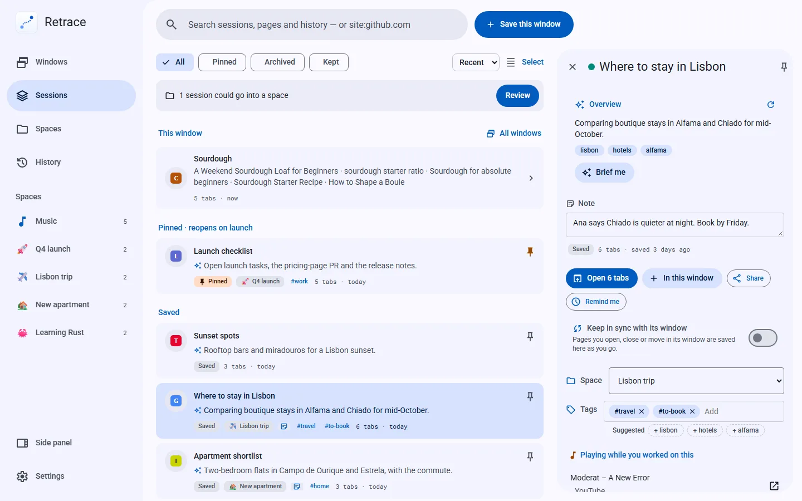
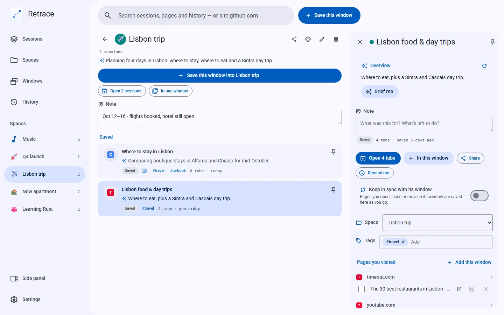
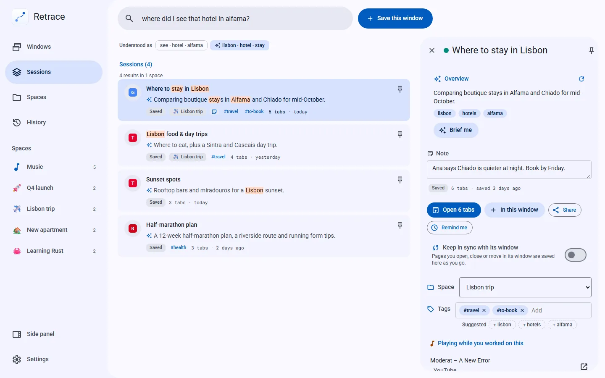
The history you have vs. the one you need
Your browser remembers every page — in one flat list, in the order you clicked. Retrace remembers what you were doing.
- (12) Sourdough for absolute beginners - YouTube
- sourdough starter ratio - Google Search
- Inbox (4) - maya@northwind.io - Gmail
- Pricing page v2 · Pull Request #482 · northwind/web
- THE 10 BEST Hotels in Lisbon 2026 - Tripadvisor
- boutique hotels alfama lisbon - Google Search
- Casa do Largo, Alfama – Updated 2026 Prices
- Pricing – Figma
- Inbox (5) - maya@northwind.io - Gmail
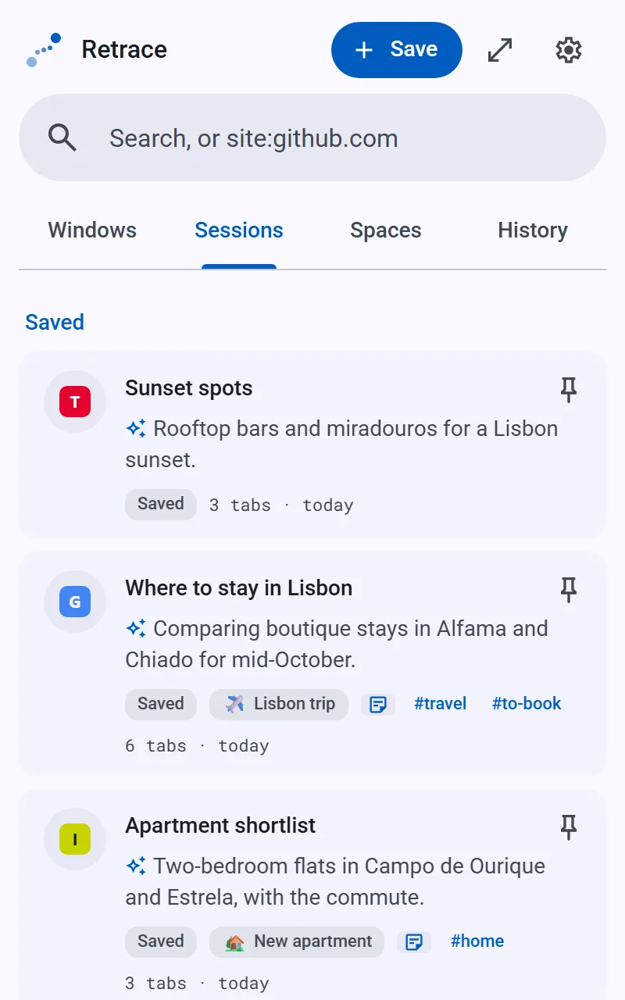
- Stays in your browser, like history
- Search in plain words
- Reopen a whole window
- Go back to any moment today
How it works
Three steps. No account, nothing to set up.
-
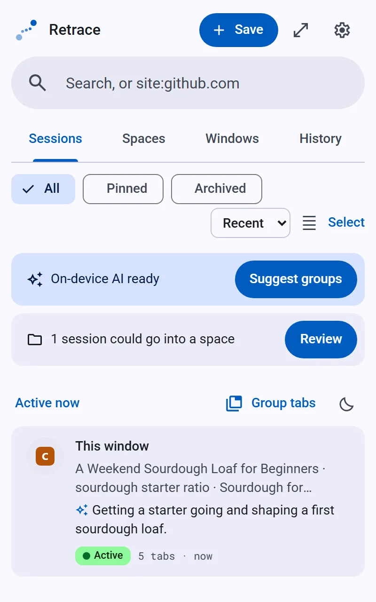
1Save
One click — or Ctrl+Shift+S — keeps the window you're in.
-
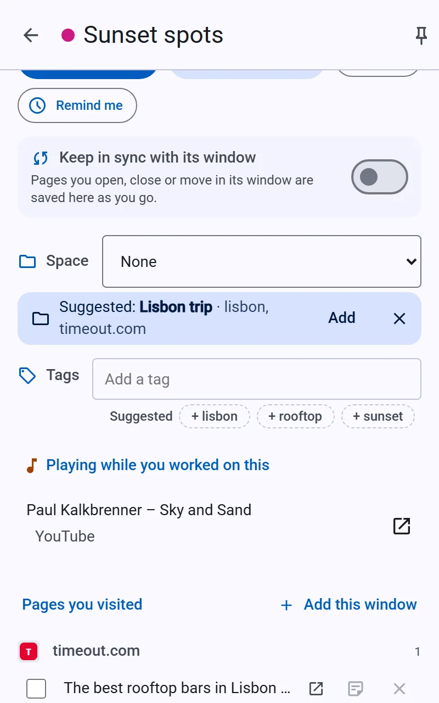
2Organize
Retrace suggests the Space it belongs in.
-
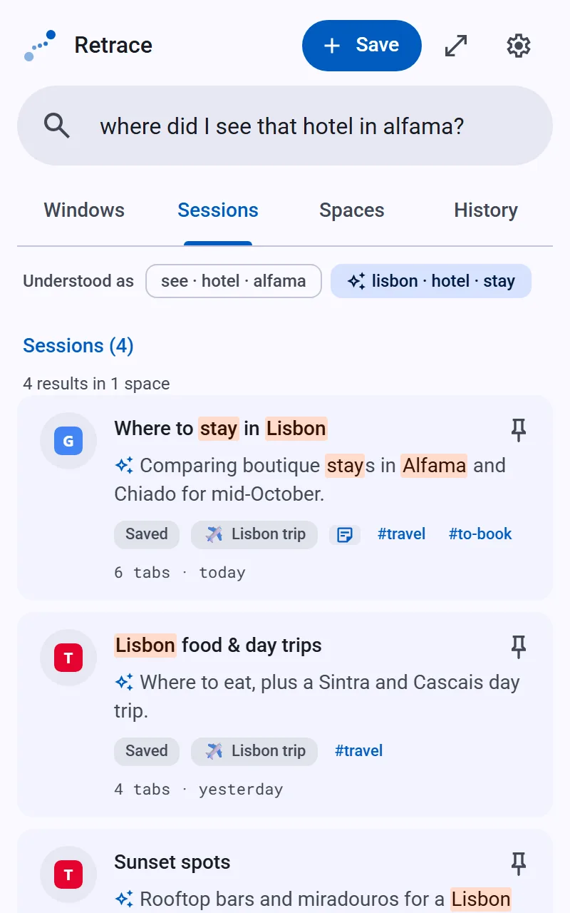
3Find it again
Ask in plain words. Reopen it all in one click.
Everything you need to retrace your steps
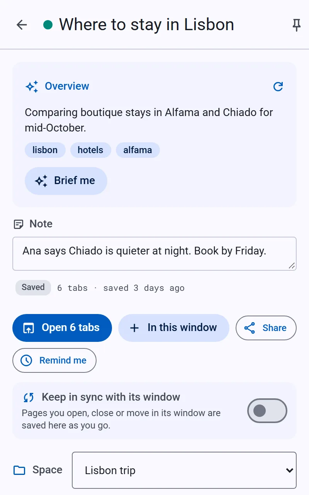
Sessions that describe themselves
A search shows as what you searched for, a video by its title, a repo by its name — never just “google.com”.
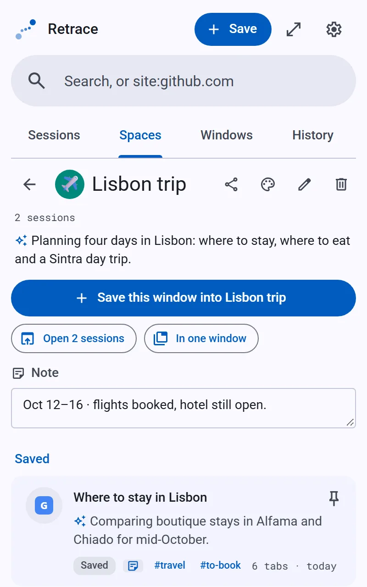
Spaces for trips, projects and courses
Related sessions gather in one place. Retrace learns what each Space is about and files new sessions for you.
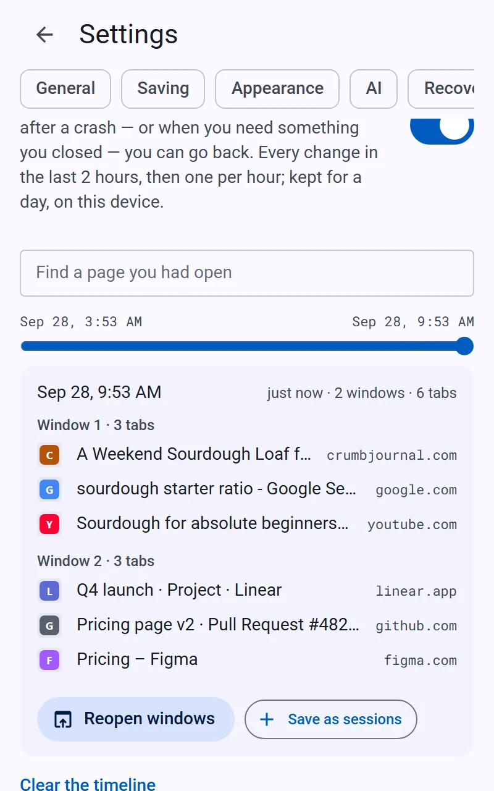
Go back to any moment
Every few minutes Retrace notes what's open. After a crash — or for that tab you closed an hour ago — slide back through the day.
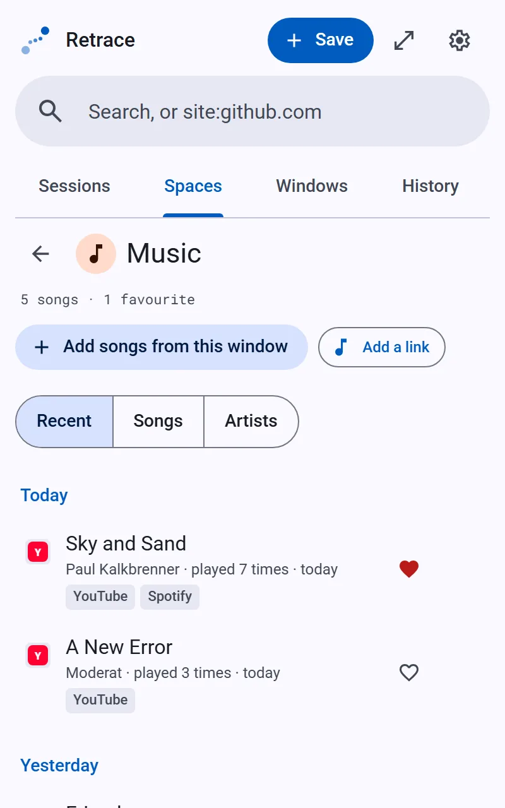
All your music in one list
One entry per song, whether you heard it on YouTube, Spotify or SoundCloud. Pro adds the songs you play by themselves.
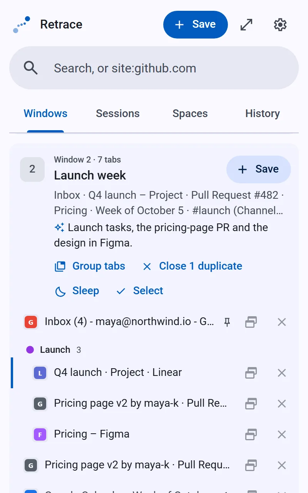
Every open window at a glance
Search your open tabs, close duplicates, move tabs between windows and put background tabs to sleep.
And the small things that add up
- Tab groups kept
- Sessions that stay in sync
- Notes on any page
- Your own tags
- “Remind me later”
- Share without uploading
- Import from OneTab & more
- On-device AI, optional
- Sleep background tabs
- Light, dark & six colours
Private like a browser feature
Retrace keeps everything in your browser's own storage — like your history and bookmarks. It has no servers to send anything to.
Free, with an optional Pro
Everything above is free on Chrome and Edge. Retrace Pro is a one-time unlock — no subscription, no account.
- Sessions, Spaces, search & history
- Recovery timeline (a day)
- Music library, notes, tags & reminders
- Windows view, tab groups, sharing & import
- On-device AI, when your device supports it
- Listening — songs you play go into Music by themselves
- Backup & restore, encrypted if you like
- A connected backup file for your other devices
- Keyboard shortcuts + Ctrl-K palette
- Tidy up, auto-archive & templates
- A 30-day recovery timeline
Checkout by Paddle. Your key arrives by email: paste it into Settings › Backup & restore and Pro turns on — checked on your device. Details · Terms · Refunds